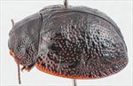
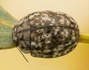
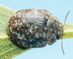
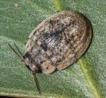
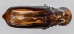
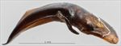
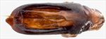
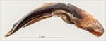
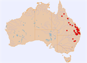

Click on images to enlarge
{kind=link}

Male, Amiens, S.E. Queensland
{kind=link}

Male, Scone, New South Wales
{kind=link}

Male, Miles, Queensland
{kind=link}

Male, Emerals, central Queensland
{kind=link}

Aedeagus, dorsal view (Millmerran, S.E. Queensland)
{kind=link}

Aedeagus, lateral view (Millmerran, S.E. Queensland)
{kind=link}

Aedeagus, dorsal view (Charleville, Queensland)
{kind=link}

Aedeagus, lateral view (Charleville, Queensland)
{kind=link}

Distribution
Name
Trachymela sp. Ta57
Reference specimen
1998-0866, Tingoora, SE Queensland.
Adult Description
Length: ♂ 6.2–7.4 mm (n=58), ♀ 6.9–8.5 mm (n=56).
Colouration:
- Head: Very dark brown, sometimes black anterior to fronto-clypeal suture; mandibles dark brown with black tips; labrum concolorous with head, but often with slightly paler sides; antennomeres 1–4 light to mid-brown, 5–11 much darker, often black.
- Pronotum: Very dark brown or black, concolorous with head, rarely mid-brown, but if so, with 4 small, near-circular dark brown or black maculae on lateral midline (one level with inner edge of each eye, others centred in foveae).
- Scutellum: Dark brown or black, concolorous with or darker than adjacent area of pronotum.
- Elytra: Dark brown, concolorous with or often a slightly lighter shade than pronotum; in the latter case, scattered with a network of black areas coinciding with pustules and raised interstices; a transversely aligned concentration of these often situated behind transverse depression and a large black raised area situated in centre of margin of disc; punctures concolorous with interstices; humeral callus black.
- Venter & Legs: Venter black; inner surface of elytral epipleura black.
- Cuticular Wax: Elytra with a moderately thick layer of brown wax, interspersed with grey in two distinct patterns: (1) grey present as thick, conspicuous patches interspersed with brown, sometimes without apparent pattern, but more often forming longitudinally aligned thick interrupted streaks along all or some of VR3, VR5, VR7, and VR9, with a broad gap usually present just posterior to antero-median depression; or (2) grey present as thin, longitudinal, interrupted lines along rows of verrucae, particularly VR3, VR5, VR7, and VR9. Pronotum unevenly scattered with brown wax, sometimes with grey patches also present.
Morphology:
- Head: Quite coarsely, somewhat unevenly punctured (pd ≈ 2–2.5× ef). Antennae short (AL: ♂ 31–38% BL, ♀ 30–34% BL), filiform.
- Pronotum: Almost evenly curved transversely; foveal depression absent, with a clearly defined and almost round elevated area in middle in its stead; puncturation on disc clearly impressed, moderately sized, noticeably larger anteriorly, evenly and moderately densely distributed in discal area, becoming much coarser from level of inner edge of eye to lateral margins; interstices smooth and nitid in discal area. Front margins join lateral margins in a smoothly rounded right-angle, with lateral margin curving smoothly and gradually towards rear margin.
- Scutellum: Sparsely to densely punctured, often more densely near anterior edge, with punctures similar in size to those on adjacent area of pronotum.
- Elytra: Surface evenly curved transversely, lightly curved longitudinally in anterior half, then slightly more strongly curved; a very shallow depression extends across surface just in front of middle; punctures very large, distinct, and relatively evenly distributed between verrucae; verrucae not aligned in longitudinal series, varying in size and elevation, with smaller ones often more elevated and prominent than larger ones, usually more concentrated behind transverse depression, sometimes merging in places to form an irregular elevated surface; surface continuous or very slightly discontinuous under humeral callus. Vertical extension of epipleura moderate (HCE/PW = 0.37–0.39).
- Venter: Prosternal process almost parallel-sided and broad, rarely broadest anteriorly, open or (rarely) lightly closed anteriorly; setae scattered over prosternal process and mesoventrite; a single seta on anterior and median trochanters; front edge of metaventrite beveled, truncate; inner edge of epipleura setose posteriorly, generally extending little further than anterior edge of 3rd abdominal segment, rarely setae are sparse.
Male Genitalia (Aedeagus):
- Dimensions: Moderately long (LPE = 27–32% BL).
- Dorsal view: Shaft almost parallel-sided over most of its length, sometimes converging almost imperceptibly over central section towards anterior, rarely very slightly sinuate, then converging towards apex in a smooth arc; dorsal surface lightly sclerotized with dorso-median channel very faint, short dorsolateral channels present adjacent to ostium; tip protruding and almost triangular; ostium short, roughly oval, posterior shaped as a very deep triangle with apex at centre; ostial processes extend to its apical edge when extended.
- Lateral view: Shaft lightly and quite evenly curved throughout, thinning towards apex over 15% of length; tip strongly deflexed; flagellum almost invariably broken off.
Immature Stages
Unknown.
Similar species
- Ta50: Very closely related to Ta57 and difficult to distinguish if male genitalia are not available. Found in North Queensland. Sculpture is more robust, with verrucae more elevated and prominent than those of Ta57, and epipleura have a smaller vertical extension (HCE/PW ≤ 0.35 vs HCE/PW ≥ 0.37 in Ta57). Has very robust lateral lobes on the mesothoracic process and its aedeagus has a sharply pointed spatula.
- Ta51: Very closely related to Ta57 and difficult to distinguish if male genitalia are not available. A northern Queensland species very similar in external morphology to Ta57. Tends to be slightly paler than Ta57, both dorsally and ventrally, and verrucae are sparser, larger, and more discrete, though some specimens are very similar to Ta57. Antennae are usually completely light brown. Specimens tend to be smaller in size, and its aedeagus, though of the same shape as Ta57, is proportionally smaller.
- Ta83: Very closely related to Ta57 and difficult to distinguish if male genitalia are not available. Sculpture is more robust, with verrucae more elevated and prominent, and epipleura have a smaller vertical extension (HCE/PW ≤ 0.35 vs HCE/PW ≥ 0.37 in Ta57). Males are often larger, but most females are about the same size as Ta57. Prosternal process is usually broader and prominently expanded anteriorly. Inner epipleura lack setae. Aedeagus is broadly similar to Ta57, but widest near apex with a prominently pointed spatula. Cuticular wax pattern is broadly similar, but Ta57 lacks the broad longitudinal wax-free band that is prominent and always present in the posterior half of the elytra in Ta83.
- Ta145: Very closely related to Ta57 and difficult to distinguish if male genitalia are not available. Sculpture is more robust, with verrucae more elevated and prominent, and epipleura have a smaller vertical extension (HCE/PW ≤ 0.35 vs HCE/PW ≥ 0.37 in Ta57). Prosternal process shape is very variable, usually narrowest anteriorly, but in some specimens can be broadest anteriorly. Lacks the line of setae on inner epipleura present in Ta57. Aedeagus is almost identical in shape to Ta57 but proportionally somewhat longer. Prefers ironbark species.
- Ta29: Similar in size and general appearance, though lacking contrasting cuticular wax colours. Very similar in elytral sculpture, but has more compact antennae, less rounded pronotal front angles, and less coarse punctures on the pronotal disc.
Notes
- Distribution & Abundance: Relatively abundant over a wide area in the northern half of eastern Australia. Easily recognized in the field by its small size and the presence of cuticular wax of contrasting colours. Males are considerably smaller than females, with almost no overlap in size distributions.
- Host Associations: Mostly collected from ironbark species (86 records), including Eucalyptus crebra (n=53), E. fibrosa (n=8), and E. melanophloia (n=3), as well as a few teneral specimens from E. cullenii at Lappa in North Queensland. West of the Great Dividing Range, it is more usually collected from box species (Symphyomyrtus: Adnataria), with records from E. populnea (n=11), E. moluccana (n=1), and unspecified box species (n=6). A few scattered records from stringybark and Angophora are likely incidental.
- Morphological Variation:
• Cuticular Wax & Sculpture: Typical pattern is a random-seeming patchwork of grey interspersed with smaller amounts of brown (e.g., specimen [2017-236]). Some specimens show more regular arrangements: (1) greyish wax as small spots arranged in longitudinal series along rows of verrucae (e.g., specimen [2022-132]), or (2) greyish wax as extended longitudinal streaks interspersed with bands of brown wax or wax-free surface, matching more regularly spaced verrucae. Specimens from E. populnea tend toward the latter pattern, while those on ironbarks (such as E. crebra) tend toward the former, though not completely consistent. These two wax patterns may indicate two distinct species grouped within Ta57.
• Aedeagus: The large spread of LPE/BL values and the presence of a few individuals with noticeably narrower aedeagi (WPE < 0.6 mm vs bulk of Ta57 specimens with WPE 0.62–0.66 mm) may also indicate more than one species in this grouping, though WPE values do not correlate with cuticular wax patterns. Specimen [2020-181a] (Miles, S Qld; off a non-E. populnea box species) has a slightly more pointed apex with slightly concave spatula sides. A specimen from Charleville falls well within overall variation, though its aedeagus is more gently rounded apically than typical.
• Antennal Lengths: Male antennal length forms two groups: AL ≥ 36% BL and AL < 35% BL.
Copyright © 2026. All rights reserved.